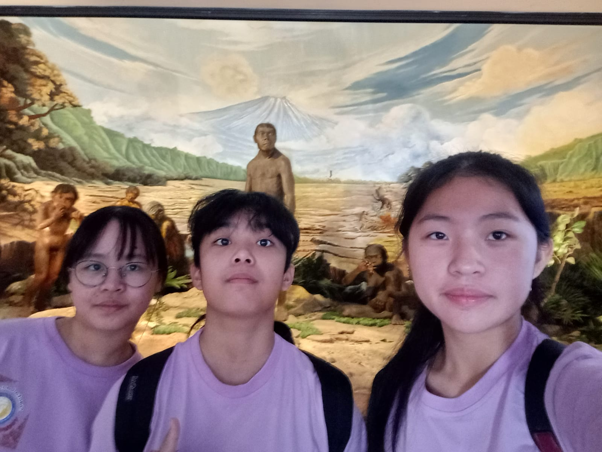
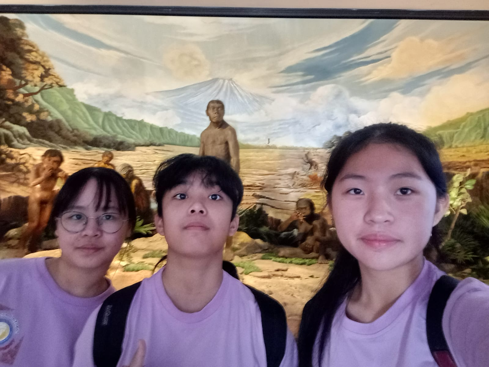

Pengalaman membajak sawah sangat berkesan dan memberikan banyak pelajaran. Kegiatan ini tidak hanya menyenangkan, tetapi juga membuat saya lebih memahami bagaimana petani bekerja keras dalam mengolah tanah.
Saat mencoba membajak sawah, saya merasakan langsung tantangan yang dihadapi petani, mulai dari berjalan di tanah berlumpur hingga mengendalikan bajak yang ditarik oleh sapi atau traktor. Kegiatan ini membuat saya lebih menghargai proses panjang di balik produksi beras yang kita konsumsi setiap hari. Selain itu, pengalaman ini juga mengajarkan pentingnya kesabaran, kerja keras, dan keterampilan dalam bertani.
Kunjungan ke Candi Prambanan sangat menarik dan berkesan. Candi ini memiliki arsitektur yang megah serta nilai sejarah yang tinggi. Saya belajar tentang sejarah candi dan legenda Roro Jonggrang.
Suasana di sekitar candi juga nyaman, dengan taman yang luas dan udara segar. Kunjungan ini menambah wawasan dan semakin menumbuhkan rasa bangga terhadap warisan budaya Indonesia.
Salah satu wisatawan Mancanegara yang saya wawancarai, menyatakan bahwa Candi PRambanan sangat indah, memiliki kebersihan yang cuup bagus (Rating 8/10), memiliki harga tiket masuk yang wajar/terjangkau, dan beliau juga merasa nyaman mengeliling candi tersebut.
 
